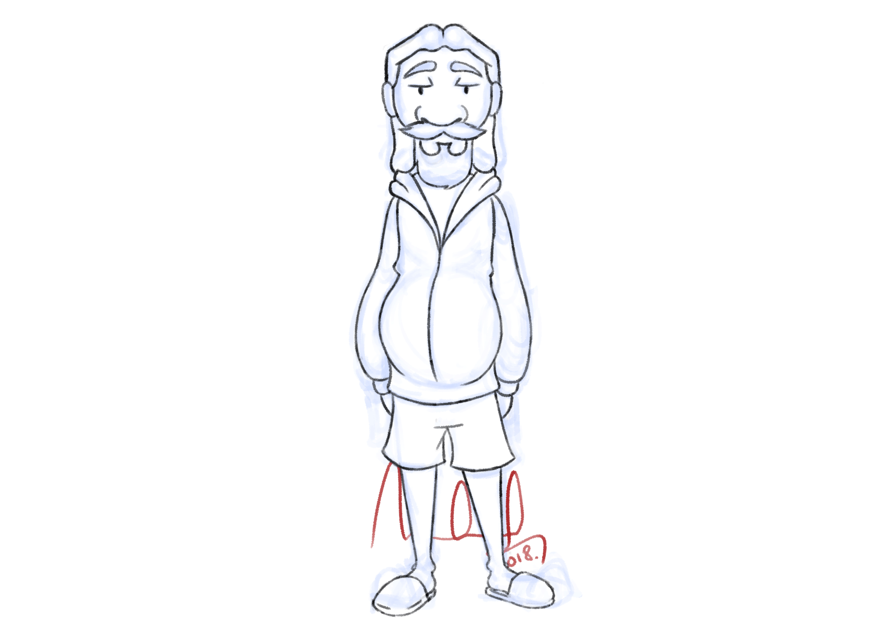
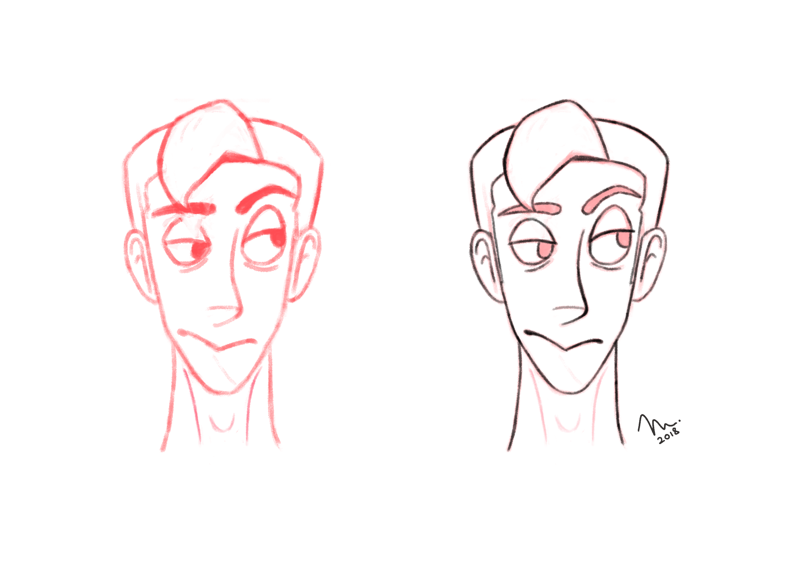
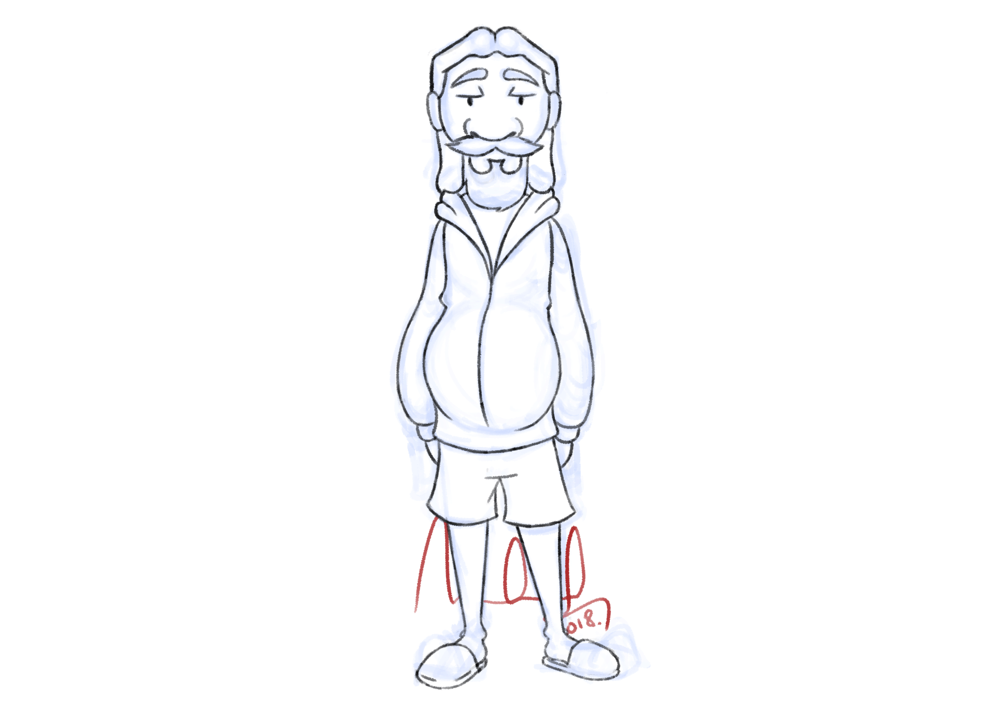
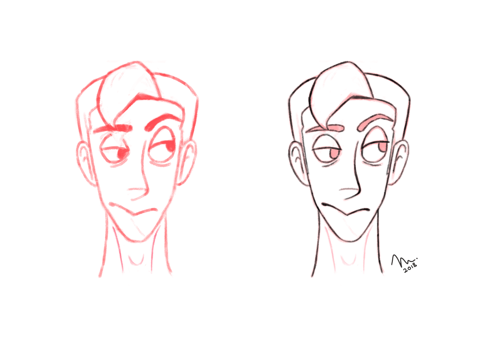

Character Design: Jeffrey Lebowski
When: February 2018
Role: Concept Artist, Illustrator, Animator
This was an independent study aimed at exercising fundamentals of character design for 2d animation, solid constructional drawing and my love for the Coen Brothers.
 Above: Final 360-turnaround of the design.
In the December of 2018, during a routine rewatch of 'The Big Lebowski', I had the strongest and most sudden urge to animate 'The Dude' in a sequence from the film. I decided to go with a dialogue and acting intensive scene because I had not, till this point, had the opportunity to animate dialogue for 'The Glassworker', the feature film I was working on as a traditional animator.
Above: The sequence I chose to animate.
Having chosen the scene, my inspired and eager self immediately transitioned to the drawing board and laid out keyframes describing how I wanted everything to play out.
Above: 1st iteration of the keyframes.
I sought feedback for these drawings and realized the design lacked appeal among other things. The drawings also lacked solid form and volume preservation. I decided to go back to the absolute basics: At least an hour a day on exercises at drawabox.com to strengthen my grip on the fundamentals of art coupled with exercises and theory for character design, courtesy of Aaron Blaise. All the while, I continued iterating on the design for the character and kept thumbnailing new ways for the animation to play out. I'd constantly seek out feedback on everything from mentors and other animators too.
Above: Character design brainstorms and sketches.
As practice (and also an expression of my love for Alex Turner), I took a break from Lebowski and tested my newly acquired knowledge of character design and solid constructional drawing by commiting to complete a 360 turnaround for a character design of Alex. I was satisfied with the result.
 Above: 360 turnaround of Alex Turner's face. The end goal was to achieve a certain level of likeness in the design while restricting myself to the use of basic shapes. This allows for the design to be easily animated.
The daily exercises were paying off; I could sense improvement. I'd quite consistently spend time on the project and sometime in the February of 2018, a design just clicked. I finalized and executed it immediately.
 Above: Final rough and inked 360 turnarounds of The Dude.
Above: Final rough and inked 360 turnarounds of The Dude.
The design was complete. It was getting a lot of positive feedback from my mentors and the general public. I proceeded to the animation at this stage. I also started rereading Richard Williams' 'The Animator's Survival Kit' to brush up on the 12 Principles of Animation.
Above: 2nd iteration of the animation with the new character design. I knew the accents needed more "OOMPH". They weren't making use of the entire body.
Feedback suggested the key's were somewhat alright but the movement in the inbetweens lacked curves. It was too stiff. The entire animation was also missing anticipation and follow-through on the keys. Another suggestion was to have more easing-in and out for the starting, ending and transitions between actions.
The criticism was spot on and reinforced the need to study Williams' 'The Animator's Survival Kit' even more. I decided to start from scratch.
Above: 3rd iteration based the feedback I recieved: 3 keys with the first two inbetweened.
This is where the animation currently stands. I need keyframes for the entire sequence to get a more tangible sense of how the acting and accents are going to play out. Then I need to inbetween everything.
Notable Experiences:
 Above: Final 360-turnaround of the design.
In the December of 2018, during a routine rewatch of 'The Big Lebowski', I had the strongest and most sudden urge to animate 'The Dude' in a sequence from the film. I decided to go with a dialogue and acting intensive scene because I had not, till this point, had the opportunity to animate dialogue for 'The Glassworker', the feature film I was working on as a traditional animator.
Having chosen the scene, my inspired and eager self immediately transitioned to the drawing board and laid out keyframes describing how I wanted everything to play out.
I sought feedback for these drawings and realized the design lacked appeal among other things. The drawings also lacked solid form and volume preservation. I decided to go back to the absolute basics: At least an hour a day on exercises at drawabox.com to strengthen my grip on the fundamentals of art coupled with exercises and theory for character design, courtesy of Aaron Blaise. All the while, I continued iterating on the design for the character and kept thumbnailing new ways for the animation to play out. I'd constantly seek out feedback on everything from mentors and other animators too.
Above: Character design brainstorms and sketches.
As practice (and also an expression of my love for Alex Turner), I took a break from Lebowski and tested my newly acquired knowledge of character design and solid constructional drawing by commiting to complete a 360 turnaround for a character design of Alex. I was satisfied with the result.
 Above: 360 turnaround of Alex Turner's face. The end goal was to achieve a certain level of likeness in the design while restricting myself to the use of basic shapes. This allows for the design to be easily animated.
The daily exercises were paying off; I could sense improvement. I'd quite consistently spend time on the project and sometime in the February of 2018, a design just clicked. I finalized and executed it immediately.
Above: Final rough and inked 360 turnarounds of The Dude.
The design was complete. It was getting a lot of positive feedback from my mentors and the general public. I proceeded to the animation at this stage. I also started rereading Richard Williams' 'The Animator's Survival Kit' to brush up on the 12 Principles of Animation.
Feedback suggested the key's were somewhat alright but the movement in the inbetweens lacked curves. It was too stiff. The entire animation was also missing anticipation and follow-through on the keys. Another suggestion was to have more easing-in and out for the starting, ending and transitions between actions.
The criticism was spot on and reinforced the need to study Williams' 'The Animator's Survival Kit' even more. I decided to start from scratch.
This is where the animation currently stands. I need keyframes for the entire sequence to get a more tangible sense of how the acting and accents are going to play out. Then I need to inbetween everything.
Notable Experiences:
- Built up a habit of consistently studying and practicing the fundamentals of art and animation.
- Constantly sought, recieved and iterated on feedback and constructive criticism.
- Improved immensely as an artist, designer and animator.